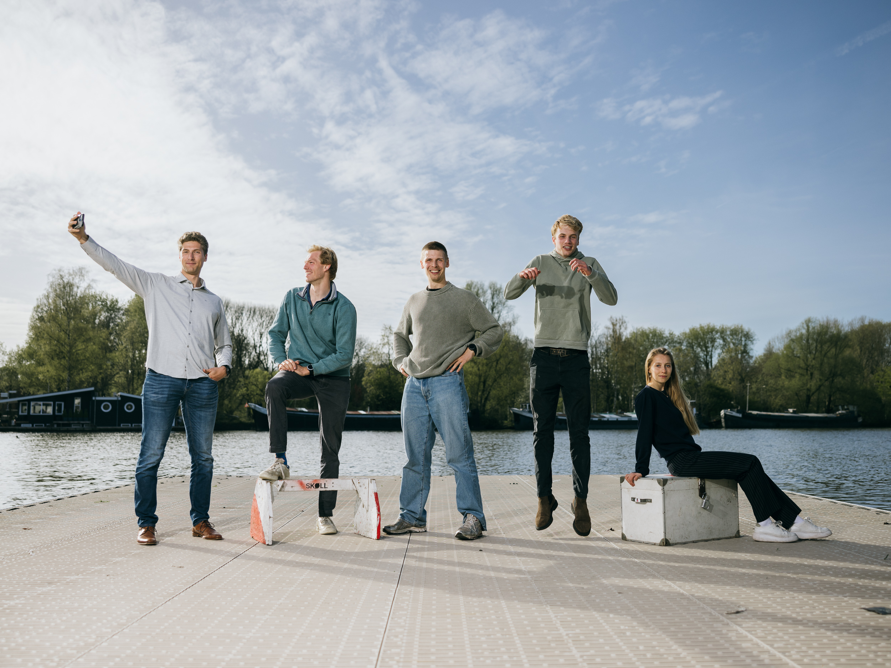

Skøll wint de Varsity
Het is de belangrijkste wedstrijd van het studentenroeien; de Varsity. Een wedstrijd die je niet wint voor jezelf, maar voor de vereniging. En dus is de wedstrijd omgeven met tradities en rituelen die de roeigoden gunstig moeten stemmen. Ik volgde de vier roeiers (De Oude Vier) van de Amsterdamse vereniging Skøll op weg naar de Varsity.
Olav
Olav Molenaar
Olympisch roeier en slag van de Oude Vier.
Nicolaas
Nicolaas Dirkzwager
Talent in het opleidingsteam van de Nederlandse roeibond.
Raphael
Raphaël Fromont
Begon zonder ervaring bij Skøll en zat binnen twee jaar in de Oude Vier.
Joost
Joost van der Sluis
‘Lichte pik’ die voor de Varsity nog wat extra kilo’s heeft gekweekt.
Lotte
Lotte Vedel
Ervaren stuur van de Oude Vier.
Scroll

Eerste bijeenkomst van de roeiers en coaches. Een Oude Vier traint alleen voor de Varsity met elkaar; de rest van het seizoen hebben ze hun eigen boten, trainingen en plannen.

Op de Amstel.

Hans is een ervaren trainer die al jaren roeiers coacht en begeleidt.

Op de Amstel.

Op snelheid.

In de kleedkamer van Skøll hebben de leden van de Oude Vier hun eigen, exclusieve kledinghaakjes.

In de zogenaamde bak kunnen roeiers via spiegels nauwkeurig op houding en gelijkheid trainen.

In de Weespertrekvaart, na de 'golfjestraining'. De Varsity wordt gevaren in heftig golvend water, wat de meeste roeiers niet gewend zijn.

Nicolaas bereidt zich voor op het Varsitydiner en de fotoshoot op Skøll.

Alleen roeiers met meer dan vijf overwinningen mogen deze das dragen.

Uitgeschreven ambities.

De das wordt goed gedaan voor de traditionele groepsfoto.

De voorzitter van Skøll spreekt de vrouwen- en mannen-Oude Vier toe.

Het Varsitydiner.

Raphaël na een doorregende training.

Joost, uitgeput na een training.

De boot op snelheid. In anderhalve week tijd zijn de roeiers aan elkaar gewend geraakt en bereiken ze zienderogen hogere snelheden.

Nicolaas roeit normaal gesproken met twee riemen. Met één riem (het zogenaamde boordroeien) krijgt hij blaren.

De Varsity is onderdeel van het studentenroeien; de roeiers studeren nog, op Olav na. Nicolaas studeert aan de HvA.

Joost heeft in zijn kelder een sauna gebouwd en brengt er bijna iedere dag een half uur door. Volgens hem is het goed voor herstel en de opbouw van rode bloedlichaampjes.

Raphaël op de ergometer, een roeisimulatie waarop je precies kunt zien hoeveel vermogen je levert.

Laatste diner met coaches en roeiers, en kilo's pasta.

Voordat de boot op transport gaat, krijgt hij een poetsbeurt van Hans.

Nicolaas krijgt een massage.

De dag van de waarheid begint op Skøll, met kwaliteitskoffie en een laatste voorbeschouwing.

Het terrein van de roeiers op de Varsity, in Houten.

Joost doet zijn voorbereidingen.

Laatste aanwijzingen van Hans voor de perfecte haal.

Start van de voorwedstrijd. De Skøll-mannen starten in de achterste baan (en ik, de fotograaf, stond aan de verkeerde kant van het kanaal).

Ze winnen de voorwedstrijd en plaatsen zich voor de finale, maar het gaat moeizamer dan verwacht.

Nicolaas komt bij van de voorwedstrijd. Het heeft behoorlijk veel kracht gekost.

Het traditionele 'zooien', waarbij leden elkaars dassen proberen te ontfutselen.

Wedstrijdspanning bij Joost.

Oproeien naar de finale.

Aanmoedigingen vanaf de kant.

De boot loopt niet; Skøll komt niet verder dan een vierde plek. Op de achtergrond de winnende boot van Laga.

Nicolaas na de wedstrijd, op het Varsityterrein.